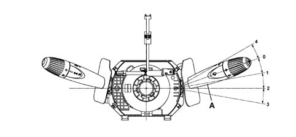
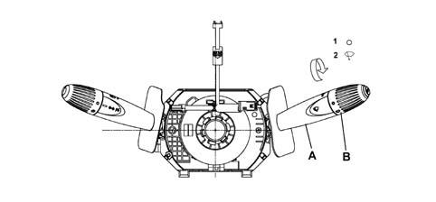

Introduction - SCREEN WASHERS AND HEADLAMP WASH/WIPE
- Path
- Descriptions > 50 AUXILIARY UNITS > 5050 SCREEN WASHERS AND HEADLAMP WASH/WIPE > Introduction - SCREEN WASHERS AND HEADLAMP WASH/WIPE
- Kind
- system description
- Applies to
- all engines; all production periods
- Interactive page
- https://sloeber94.github.io/elrnDB-fPnd/en/#/2753483
Applies to: all engines; all production periods
Windscreen wash/wipe
The windscreen wash/wipe system is operated by a stalk on the left side of the steering wheel and is fully managed by the Body Computer Node.
The system operates with the ignition key turned ON.
The following figure shows the four different positions that the steering wheel stalk (A) may adopt when turned clockwise.

0, rest position: windscreen wiper off 1, intermittent operation (first position of steering wheel stalk): the windscreen wiper motor operates in 1st speed; 2, continuous fast operation (2nd speed); second stalk position; 3, continuous, fast speed (3rd speed); third stalk position. 4, antipanic function position
Applies to: all engines; all production periods
Windscreen wash/wipe
Move the lever anticlockwise to activate the antipanic function. The windscreen wiper motor operates in 2nd speed throughout the time operation is maintained by the user.
The windscreen washer function is operated by pulling the lever gently towards the steering wheel: the windscreen washer pump is activated in this way; if the lever is kept in this position, the windscreen wipers will come on (continuous operation in 1st speed); when the lever is released, the windscreen wipers will continue to operate for several strokes. After every six seconds, calculated when the wiper reaches its rest position, the wiper makes an extra sweep (after-wipe function).
Applies to: all engines; all production periods
Rear wash/wipe
The rearscreen wiper is operated by turning the ring nut (B) on the end of the stalk (A) located on the right of the steering wheel and is fully managed by the Body Computer Node.
The system operates with the ignition key turned ON.

1, rest position 2, wipe position
Applies to: all engines; all production periods
Rear wash/wipe
The rear wiper motor is controlled in intermittent mode by the Body Computer Node. The rear wiper can be operated at the same time as the windscreenw wiper, but at half the rate of the windscreen wiper, regardless of windscreen wiper operating mode.
The rear wiper function is activated by pressing the left steering wheel stalk toward the facia. This operates the rear washer pump (the same used for the windscreen washer pump) the rear wiper comes on when the stalk is kept pressed; When the lever is released, the windscreen wipers will continue to operate for several strokes. An afterwipe function is provided for the rear wiper too.
When the windscreen wiper is working, engaging reverse gear automatically activates the rearscreen wiper.
Applies to: all engines; all production periods
The headlamp washer function can be activated only if the low or high beams are on.
The headlamp washer function does not have a specific control; the control is the same as the one issued via the right steering wheel stalk to operate the front windscreen washer function.
The headlamp washer function is operated whenever the front windscreen washer is operated.
The headlamp washer pump power supply is protected by a specific fuse and controlled by a relay, both housed in the engine compartment junction unit.